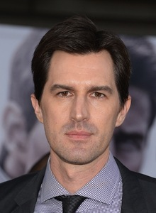

Top gun: Maverick
Top Gun: Maverick: es una película de acción y drama estadounidense de 2022. Secuela de la película de 1986 Top Gun. Se estrenó el 27 de mayo de 2022 en Estados Unidos. La cinta fue aclamada por la crítica, y muchos la calificaron como mejor que la original. Ganó el premio a la Mejor película por el National Board of Review y también fue nombrada una de las diez mejores películas de 2022 por el American Film Institute. La película también recibió muchos otros premios, incluyendo nominaciones para el Globo de Oro a la mejor película dramática y el Premio de la Crítica Cinematográfica a la mejor película.
Director
Esta película esta dirigida por joseph kosinski
Reparto
- Tom cruise
- Miles Teller
- Jon Hamm
- Jennifer Connelly
- Glen Powell
- Monica Barbaro
- Jay Ellis
- Lewis Pullman
Como el capitán Pete "Maverick" Mitchell, un instructor de vuelo. Un piloto experimentado

Como Bradley "Rooster" bradshaw, un piloto aprendiz y el hijo del fallecido compañero de Maverick.

Como el vicealmirante Beau "Cyclone" Simpson, el comandante de las Fuerzas Aéreas Navales.

Como Penelope "Penny" Benjamin, una madre soltera y dueña de un bar.

como el teniente Jake "Hangman" Seresin, piloto de F/A-18E y candidato a la misión.

Como la teniente Natasha "Phoenix", una piloto de F/A-18F y candidata a misión.

Como el teniente Reuben "Payback" Fitch, un piloto de F/A-18F y candidato a misión.

Como el teniente Robert "Bob" Floyd, un piloto de F/A-18F y candidato a misión.

Puñales por la espalda: el misterio de Glass Onion
Puñales a la espalda: es una película de misterio estadounidense de 2019. Siguiendo el estilo del género whodunit, la película sigue a una reunión familiar que salió mal, después de que la muerte del patriarca lleve a un detective maestro a investigar. Puñales a la espalda tuvo su estreno mundial en el festival internacional de Cine de toronto de 2019 el 7 de septiembre, y fue estrenada en los Estados Unidos
Director

Esta película esta dirigida y escrita por Rian Johnson
Reparto
- Daniel Craig
- Ana de Armas
- Chris Evans
- Jamie Lee Curtis
- Michael Shannon
- Don Johnson
- Christopher Plummer
- Toni Collette
Como Benoit Blanc, detective encargado de investigar la muerte de Harlan.

Como Marta Cabrera, la enfermera y amiga de Harlan.

Como Hugh Ransom Drysdale, el nieto de Harlan (hijo de Linda y Richard), un playboy mimado.

Como Linda Drysdale, la hija mayor de Harlan y esposa de Richard. Dirige su propia compañía con ayuda de su marido.

Walter «Walt» Thrombey, el hijo menor de Harlan y esposo de Donna. Es el encargado de manejar el negocio de venta de novelas de su padre.

Como Richard Drysdale, el esposo de Linda y su principal apoyo en el manejo de su compañía.

Como Harlan Thrombey, un escritor de novelas de misterio que es hallado muerto tras celebrar su cumpleaños la noche anterior.

Como Joni Thrombey, la viuda de Neil, el hijo fallecido de Harlan y una influencer de la vida gurú.

The Batman
The Batman:es una película estadounidense de superhéroes, basada en el personaje homónimo creado por Bob Kane y Bill Finger para DC Comics. La película fue anunciada en 2015, Sin embargo, tras múltiples problemas personales del actor, decidió retirarse del proyecto. La cinta tenía una fecha de estreno prevista por Warner Bros. Pictures para el 25 de junio de 2021, pero fue retrasada dos veces a causa de la pandemia de COVID-19, hasta fijarse al 4 de marzo de 2022.
Director

Esta película esta dirigida y escrita por Matt Reeves
Reparto
- Robert Pattinson
- Zoë Kravitz
- Paul Dano
- Jeffrey Wright
- John Turturro
- Colin Farrell
- Peter Sarsgaard
- Barry Keoghan
Como Bruce Wayne / Batman.

Como Selina Kyle / Catwoman

Como Edward Nashton / Riddler

Como James Gordon.

Como Carmine Falcone.

Como Oswald «Oz» Cobblepot / El Pingüino.

Como Gil Colson

Como el Joker

Avatar: El sentido del agua
Avatar: el sentido del agua es una película estadounidense perteneciente al género del cine épico, ciencia ficción y animación, Es la primera de las cuatro secuelas planificadas de su película Avatar. Los rodajes preliminares para la película comenzaron en Manhattan Beach, California el
Director

Esta película esta dirigida, escrita y coescrita por James Cameron.
Reparto
- Sam Worthington
- Zoe Saldaña
- CCH Pounder
- Stephen Lang
- Cliff Curtis
- Sigourney Weaver
- Jamie Flatters
- Britain Dalton
Como Jake Sully, un ex-humano que se enamoró de Neytiri y se hizo amigo de los Na'vi después de convertirse en parte del programa avatar.

Como Neytiri, la consorte de Jake, hija del jefe anterior del clan Omaticaya.

Como Mo'at, la líder espiritual del clan de los Omaticaya y la madre de Neytiri.

Como o el Coronel Miles Quaritch, un humano que lideró las fuerzas de seguridad de la RDA, la organización humana que colonizó Pandora.

Como Tonowari, el líder del clan de las personas de los arrecifes, los Metkayina.

Como Kiri, la hija adolescente adoptiva de Jake y Neytiri.

Como Neteyam, el hijo mayor de Jake y Neytiri.

Como Lo'ak, el segundo hijo de Jake y Neytiri.

The Northman
The Northman es una película de suspenso y drama histórico épico estadounidense-británica. Ambientada a principios del siglo x en Islandia, está protagonizada por Alexander Skarsgård como el príncipe vikingo Amleth, junto a Nicole Kidman, Anya Taylor-Joy, Björk, Ralph Ineson, Ethan Hawke y Willem Dafoe. La trama sigue al personaje de Amleth, quien emprende una misión vengativa después del asesinato de su padre. El estreno de la película fue el 28 de marzo de 2022, de la mano de la productora cinematográfica independiente Focus Features.
Director

Esta película esta dirigida por Robert Eggers.
Reparto
- Alexander Skarsgård
- Nicole Kidman
- Claes Bang
- Anya Taylor-Joy
- Ethan Hawke
- Willem Dafoe
- Murray McArthur
- Ingvar Eggert Sigurðsson
Como Amleth

Como la reina Gudrun.

Como Fjölnir.

Como Olga.

Como el rey Horvendill.

Como Heimir.

Como Hakon.

Como el brujo.

Todo a la vez en todas partes
Todo a la vez en todas parteses una película estadounidense de comedia dramática absurda de acción y ciencia ficción de 2022. La película se estrenó en el South by Southwest el 11 de marzo de 2022. Comenzó un estreno limitado en cines en los Estados Unidos 25 de marzo de 2022, antes de estrenarse el 8 de abril de 2022 por A24. La película recibió elogios de parte de la crítica y recaudó más de $103 millones en todo el mundo. , convirtiéndose en la primera película de A24 en cruzar la marca de los 100 millones de dólares y superando a Hereditary (2018) como su película más taquillera. National Board of Review yel American Film Institute la nombraron una de las diez mejores películas de 2022. La película recibió seis nominaciones en la 80.ª edición de Globos de Oro, incluyendo Mejor Película - Musical o Comedia y Mejor Director, ganando Mejor actriz - Comedia o musical y Mejor actor de reparto, y 14 nominaciones principales en los Premios de la Crítica Cinematográfica, incluyendo Mejor Película.
Director

Esta película esta dirigida por Dan Kwan.
Reparto
- Michelle Yeoh
- Ke Huy Quan
- Stephanie Hsu
- James Hong
- Jamie Lee Curtis
- Jenny Slate
- Harry Shum Jr
- Tallie Medel
Como Evelyn Wang, una mujer chino-estadounidense que existe en múltiples universos.

Como Waymond Wang, esposo de Evelyn.

Como Joy Wang / Jobu Tupaki, hija de Evelyn.

Como Gong Gong, el padre de Evelyn.

Como Deirdre Beaubeirdra, inspectora del IRS.
Como Big Nose.

Como Chad.

Como Becky, la novia de Joy.

The Black Phone
The Black Phonees una película estadounidense de terror sobrenatural.se trata de una adaptación del cuento homónimo de Joe Hill. Está protagonizada por Mason Thames en el papel de un niño secuestrado que puede comunicarse con las anteriores víctimas de su secuestrador, interpretado por Ethan Hawke. En enero de 2020, Derrickson anunció su salida de la dirección de Doctor Strange in the Multiverse of Madness debido a diferencias creativas con Marvel Studios. Como resultado, decidió asociarse con Cargill para realizar The Black Phone. El largometraje se anunció en octubre de 2020 y el rodaje comenzó en febrero de 2021. The Black Phone tuvo su estreno mundial en el Fantastic Fest el 25 de septiembre de 2021. Estaba previsto que Universal Pictures se estrene en cines el 4 de febrero de 2022, pero debido a falta de tiempo acabó siendo atrasada al 24 de junio de 2022. La película recibió críticas generalmente positivas, con elogios por su fidelidad al material original, la dirección de Derrickson y la actuación de Hawke.
Director

Esta película esta dirigida por Scott Derrickson.
Reparto
- Mason Thames
- Madeleine McGraw
- Ethan Hawke
- Jeremy Davies
- James Ransone
- E. Roger Mitchell
- Troy Rudeseal
- Miguel Cazarez Mora
Como Finney Blake: El hermano de Gwen y el hijo del Sr. Blake.

Como Gwendolyn Blake: La hermana de Finney y la hija del Sr. Blake.

Como Albert / "El Raptor": Un secuestrador de niños y asesino en serie.
Como el Terrence Blake: El padre alcohólico de Finney y Gwen.

Como Max: El hermano de Albert "El Raptor".

Como el detective Wright.

Como Detective Miller.

Como Robin Arellano.

Nope
Nope es una película de terror y ciencia ficción estadounidense de 2022, Está protagonizada por Daniel Kaluuya, Keke Palmer, Steven Yeun, Michael Wincott y Brandon Perea y sigue a dos hermanos propietarios de un rancho que intentan capturar evidencia de un objeto volador no identificado. La filmación tuvo lugar durante el otoño de 2021 en el norte del condado de Los Ángeles y terminó en noviembre. Se rumoreaba que el título era un acrónimo de "Not Of Planet Earth" o "Not Our Planet Earth" según el póster de la película, pero Peele reveló más tarde que el título se refiere a la reacción que esperaba provocar en el público.
Director

Esta película esta dirigida por Jordan Peele.
Reparto
- Daniel Kaluuya
- Keke Palmer
- Steven Yeun
- Jacob Kim
- Brandon Perea
- Michael Wincott
- Wrenn Schmidt
- Keith David
Como Otis Jr. "OJ" Haywood, hijo de Otis.

Como Emerald "Em" Haywood, hija de Otis.

Como Ricky "Jupe" Park, ex niño actor y propietario/creador del parque temático "Jupiter's Claim".

Como Young Ricky "Jupe" Park, quien interpreta a Mikey Houston en Gordy's Home.

Como Angel Torres, un vendedor de tecnología en Fry's Electronics.

Como Antlers Holst, un reconocido director de fotografía.

Como Amber Park, la esposa de Jupe.

Como Otis Haywood Sr., el propietario del Hollywood Horses Ranch de Haywood.

Black Panther: Wakanda Forever
Black Panther: Wakanda Forever es una película de superhéroes basada en el personaje Pantera Negra propiedad de Marvel Comics. Producida por Marvel Studios y distribuida por Walt Disney Studios Motion Pictures, es la secuela de la película Black Panther (2018) y la película número 30 del Universo cinematográfico de Marvel (UCM).Los planes para la película cambiaron en agosto de 2020 cuando la estrella de Black Panther, Chadwick Boseman, falleció de cáncer de colon, y Marvel decidió no reemplazarlo en su papel de T'Challa. Se confirmó que otros miembros principales del elenco de la primera película regresarían en noviembre, y el título se anunció en mayo de 2021.
Director

Esta película esta dirigida por Ryan Coogler.
Reparto
- Letitia Wright
- Lupita Nyong'o
- Danai Gurira
- Dominique Thorne
- Winston Duke
- Angela Bassett
- Ténoch Huerta
- Florence Kasumba
Como Shuri / Black Panther: La princesa de Wakanda que diseña nueva tecnología para Wakanda.

Como Nakia: Una miembro de los Perros de Guerra, una espía encubierta de Wakanda, de la Tribu del Río.

Como Okoye: La jefa de la Dora Milaje, las fuerzas especiales de Wakanda.

Como Riri Williams / Ironheart: Una inventora genio que crea una armadura que rivaliza con la armadura de Iron Man.

Como M'Baku: Un poderoso y despiadado guerrero que es el líder de la tribu montañesa de Wakanda, los Jabari.

Como Ramonda: La Reina Madre de Wakanda que está de duelo por la muerte de su hijo T'Challa.

Como Namor: El rey de Talokán, una antigua civilización de personas que habitan bajo el agua.

Como Ayo: Miembro y segunda al mando de la Dora Milaje.

Turning Red
Turning Red es una película estadounidense de comedia, de aventuras y que trata a la pubertad de una manera metafórica, animada por ordenador, producida por Pixar Animation Studios y lanzada por Walt Disney Pictures. Red se estrenó en China el 18 de febrero de 2022, y en Disney+ en Estados Unidos y demás países con la plataforma el 11 de marzo de 2022 y 10 de marzo de 2022, siendo estrenada en cines en países que no disponen de la plataforma. A mediados de marzo del año 2002, Meilin "Mei" Lee es una niña canadiense de ascendencia china de 13 años que vive en la ciudad de Toronto. Es una estudiante prodigio y tiene un séquito de amigas cercanas compuesto por Miriam, Priya y Abby.
Director

Esta película esta dirigida por Domee Shi
Reparto
- Meilin "Mei" Lee
- Ming Lee
- Miriam Wexler
- Abby Park
- Priya Dewan
- Jin Lee
- Abuela de Mei
- Tyler Nguyen-Baker
Como Rosalie Chiang.

Como Sandra Oh.

Como Ava Morse.

Como Hyein Park.

Como Maitreyi Ramakrishnan.

Como Orion Lee.

Como Wai Ching Ho.

Como Tristan Allerick.